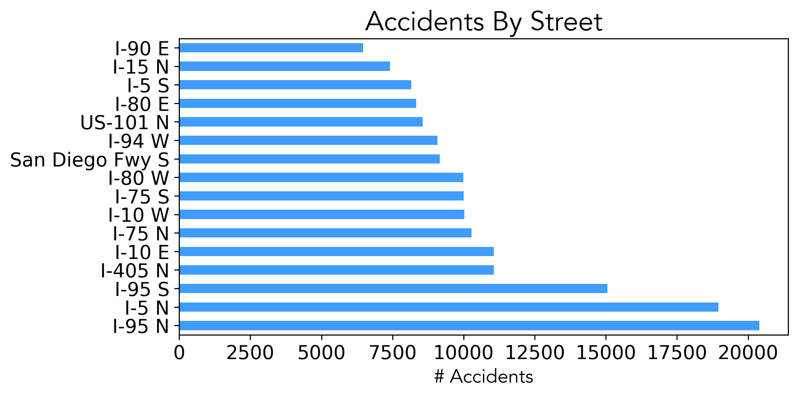
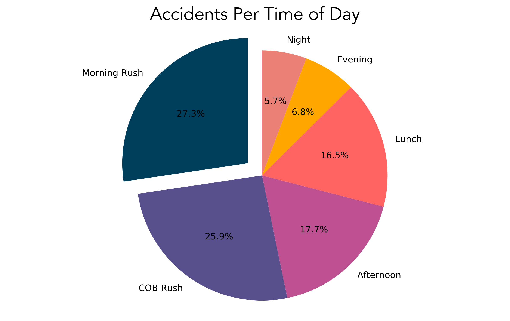
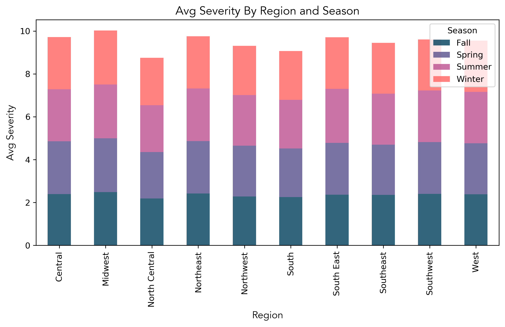
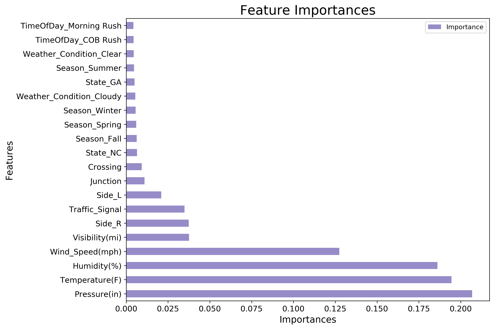

Introduction
The goal of this project was to attempt prediction accidents severities. Severity predictions can be helpful in traffic management to divert traffic from the most severe accidents and improve response time to most severe accidents. The project explored the effect of several features on traffic accidents, generally, and severity, specifically, using a series of charts and machine learning.
Data
The traffic accident dataset, sourced from Kaggle, includes data from 49 states between February 2016 to March 2019. Sources include US and state departments of transportation, law enforcement agencies, traffic cameras, and traffic sensors within the road-networks. In total, the dataset contains 2.25 million recorded accidents.
2.25 million accidents
Utility
The output of this project could be useful for numerous applications like real-time accident prediction, hotspot analysis, or studying the impact of weather on accident occurrence.
National Overview



Machine Learning Models
Data Cleanup
This initial model included 1.8 million records (down from ~2.25 m ). I dropped null values and columns with the least amount of information or data that will not be known at the time of the accident such as accident end time. Features that were too specific,
such as the street name for 1.8M records and features that proved to have low impact on the model were also removed. Here is the full list of removed features:
"End_Lat", "End_Lng", "Number", "Wind_Chill(F)", "Precipitation(in)",
"Airport_Code", "Weather_Timestamp", "ID", "Source", "Description", "TMC", "End_Time", "Distance(mi)", "Zipcode", "Country", "City", "County", "Timezone", "Civil_Twilight", "Nautical_Twilight","Astronomical_Twilight", "Street",
"Start_Time", "Start_Lat", "Start_Lng", "Wind_Direction", "State", "Give_Way","Traffic_Calming", "Roundabout","Bump", "Turning_Loop"
Initial Model and Feature Selection
I used several models to predict Accident Severity (Y), including Random Forest, Decisions Tree, Support Vector Machine (SVM), and Logistic Regression. As a baseline test model, I ran Random Forest on most features except the ones removed during data cleanup (see above). From there, I determined features with the least impact on the model and dropped them from any subsequent models. This test run model’s train score was in the low nineties and test score in the low sixties.
Random Forest Model 1
The best model proved to be Random Forest with the initial Training Data Score of 0.9431 and Testing Data Score of 0.6555.
Feature Engineering - Weather Condition
Once I identified the features that were least relevant, I thought about creating new simplified features based on existing once. Features with high cardinality like “Weather Condition” were grouped into lower number of unique values. For example, Shallow Fog, Patches of Fog, Light Freezing Fog, Light Fog, Haze, Light Haze all became “Fog”. This exercise reduced the weather condition unique value counts from 55 to 20. I used GridSearchCV to determine best max depth and number of estimators, but that approach did not yield a better test score.
Random Forest Model 2
Data Cleanup
I did the same initial clean up as in model 1, including the new weather condition feature. Then I went further and removed any records where end time is less than start time and any accidents that were over 12 hours long. Some accidents lasted years according to the data! I added additional features explained in the feature engineering section and I also included the State.
Feature Engineering
I extracted the month, hour, and minute values from the start and end times of the accident. This information allowed me to calculate accident’s duration and create new features such as seasons and time of day. I also added categorized the states info different climatic regions such as 'Central', 'West', 'Southeast', by merging the data with another csv file on state. This model resulted in a slightly better training score of 0.9569 and testing score of 0.6838.
Below is a chart showing features ranked by importance in the model.
Duration and Severity
The severity of the accident, is a number between 0 and 4, where 0 indicates the least impact on traffic (i.e., short delay as a result of the accident) and 4 indicates a significant impact on traffic (i.e., long delay). I was surprised that there was no stong correlation between the severity of an accident and its duration with a pearson correlation coefficient of 0.038772. Most accidents lasted around 30 minutes.